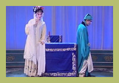

“源”来如此
桂剧，起源桂林，流传于桂北广大城乡，是广西各族人民喜闻乐见的主要地方剧种之一。 桂剧用桂林方言演唱，声调优美，抑扬有致。它包括高、弹、昆、吹四大声腔，而以弹腔的南北路（即西皮、二黄）为主，属于皮黄系统板腔体的戏曲形式。桂剧旧有大小八百多出传统剧目，以小旦、小生、小丑的“三小戏”见长。表演质朴细腻，唱腔委婉动人，犹如一江漓水，清澈明亮；又如一树桂花，馨香朴鼻，具有浓郁的乡土气息。
关于桂剧的源流问题，历来众说纷坛。有人认为，明代初年，明太祖朱元漳封侄孙朱守谦为靖江王于桂林，曾赐予剧本和戏班。从此，桂林始有戏剧演出活动，这就是桂剧的雏形，距今已六百年了。也有人认为，明代万历九年（1581年）安徽桐城人萧德元、邵仕庵来桂林做官，传授徽调与桂林艺人，于是组织班子，形成了桂剧，算来约有四百年的历史。本世纪四十年代，我国著名戏剧家欧阳予倩、焦菊隐在桂林从事桂剧改革，搜集了大量资料，进行考证，认为是湖南的祁剧传入桂林，吸收了当地的民间艺术，改变了舞台语言而最后演变成桂剧的。欧阳予倩在《后台人语》一文中说：“桂戏，本来是湖南的戏，就是祁阳戏。”这种观点，看来论据比较充分，也符合戏剧史的实际情况，因此为多数人所接受。应该说，桂剧是在清代嘉庆年间，湖南祁剧传入桂林后，经过一个时期的语言变化，才逐渐演变为桂剧，其历史大概有二百年左右。
金冠”“马步”
关于桂剧剧目，艺人中间有“大小本杂八百出”之说。据1956年统计，已搜集到的整本戏171出，小杂戏351 出，如果加上整本戏中可独立演出的折子戏314出，共有836出，菁芜并存。其中绝大部分为弹腔本。高昆戏仅五十余出，而且很少演出。桂剧本多数与祁剧相同；故祁桂剧演员可以同台演出，而不受剧本的影响。有一部分剧本则是从京剧移植而来。只有唐景崧编辑的《看棋杂剧》四十种及欧阳予倩在抗战时期所编的桂剧剧本，才是独有的剧目。相传桂剧《磨盘山》（又名《卖子投崖》）为桂剧艺人根据清末昭平县一件冤案编写，唱做并重，艺术性较高，向被认为是桂剧的保留剧目。
在桂剧的传统剧目中，大部分是历史故事，多在庙会草台连本演出，表演粗犷质朴。如刀马旦的“马步”和武生的“紫金冠”特色显著，为人称道。在城市演出，则以“三小戏”即小旦、小生、小丑戏为主，表演细腻，造诣较高。如《拾玉镯》的做功，《抢伞》的舞蹈，《紫房别》的“罗帽”功夫等，均脍炙人口，反映了桂剧的主要特色。
弹腔”“杂调”
桂剧唱腔以弹腔为主体，兼有高腔、昆腔、吹腔和杂腔小调，音韵格律与京剧大体相同，但因桂林方言没有卷舌音，放在声调和称呼上略有差异。弹腔属皮黄系统的板腔体，分南路（即京剧的二黄）和北路（即京剧的西皮）两大类，并各有反调“阴皮”和“背弓”。北路高亢雄壮，南路委婉低沉，阴皮则略带凄婉悱恻。弹腔唱词，基本上以三三四的十字句和二二三的七字句为主，讲究韵仄、上下句对称。十字句节奏较慢，以抒情为主；七字句节奏较快，以叙说为主。演唱时，生行、老旦、丑行用本音，小生、旦行用子音（真假嗓结合，桂剧称为“雨夹雪”），净行用霸音。
桂剧高腔源于戈阳腔，与其它剧种的高腔相同，是一种由曲牌缀合组成的曲牌体。可整出使用，也可插入弹腔演唱。曲调高亢、悲壮。旧时用乐队伴唱形式，现改为乐队伴奏，效果更为强烈。
桂剧昆腔，即昆曲，也是由曲牌缀合组成的曲牌体，曲调委婉低回，格律比较严格，但剧目不多，已不常用。
桂剧吹腔有笛子伴奏的“安庆调”（又名“安春调”）和唢呐伴奏的“七句半”、“五句半”、“三句半”。曲调诙谐、轻快，现多插入弹腔使用。
桂剧伴奏乐队分文武场，文场以胡琴（京胡、二胡）和弹拨器（月琴、三弦）为主，称为“三大件”，间用笛子、唢呐。武场有战鼓、桂锣、小锣、钹等，其中以桂锣最有特色。

成剧在“人”
桂剧流传于桂北一带，以桂林、柳州为中心，其它如平乐、荔浦、全州、兴安、宜山各县亦被称为桂剧的“戏窝”。清末民初，桂剧在粤北及湘南也颇有影响。祁剧中不少著名旦角出自桂剧科班。民国初年，南宁办有桂剧“赞字科班”和大华公司女科班，对宾阳丝弦戏和邕剧有所影响。
对于桂剧的发展，清光绪年间的唐景崧曾作出了一定的贡献。唐景崧，字薇卿，灌阳人，中法战争时，为上书请缨而名噪一时。中日甲午战后隐居桂林，以丝竹自娱，在宅内建有看棋亭和戏台。唐景崧曾组建“桂林春班”，先后整理和编撰桂剧剧本《晴雯补裘》、《黛玉葬花》等四十种，集成《看棋亭杂剧》出版，被人誉为“选材精警，词藻风华”、“词雅而意深”。他为桂剧提供了新的剧目，并不时指点艺人的表演艺术。
对桂剧改革作出了重大贡献的是我国著名戏剧艺术家欧阳予倩。1938年广西大学校长马君武创立广西戏剧改进会，欧阳予倩应聘来到桂林从事桂剧改革工作。他所作的改革桂剧的演讲和文章，影响极大。欧阳予倩指出，若想保存桂剧，就必须应时代的需要，根本加以改革。他所提出的改革方案，包括彻底澄清桂剧内容，加速编演新节目，建立导演制，吸收新唱腔，采用布景，美化舞台，建立健全的职业剧团等。他曾将《梁红玉》改编为桂剧本，亲自组织排演，连续演出二十八场，盛况空前，得到广大观众的好评。1940年欧阳子倩建立了桂剧实验剧团，上演了自己编导的新戏《胜利年》。以后又开办挂剧学校，筹建广西剧场。数年间，先后为桂剧编导了《桃花扇》、《木兰从军》、《人面桃花》、《渔夫恨》等剧，共整理和改编了一批传统剧目，培养了大批演员。欧阳予倩曾赋诗表明他对挂剧的深情和改革桂剧的决心：“桂剧优秀地方戏，不可视之为等闲。有志从事于改革，论直有据技宜娴。文学音乐慎勿忽，迈进毋畏路途艰。
桂剧代表作品
《拾玉镯》：描述明代陕西孙家庄少女孙玉姣在门外刺绣，被来买雄鸡的少年世袭指挥傅朋看见，互相发生了爱情。傅朋故意丢下玉镯一只，以表心意，孙玉姣拾起时正被邻居刘媒婆看见，刘就以探望为名，问出孙的心事，答应代为撮合而去。
《双拜月》：全剧的故事是叙述了蒙古战争时，书生蒋世隆与妹瑞莲失散，少女王瑞兰亦与其母失散。世隆与瑞兰相遇，结为夫妇，瑞莲则与瑞兰母同行。瑞兰父在旅店遇见瑞兰，因嫌门户不当，竟逼其女撇下世隆随已回家。在路上又与其妻及瑞莲相遇。瑞兰回家，思念世隆，夜间焚香拜月，倾述情怀，被瑞莲得知，两人遂愈加亲密。最后世隆中了状元，与瑞兰重聚，瑞莲则与世隆的结义兄弟成婚。
《瑶妃传奇》：讲述的是纯真美丽的瑶家姑娘纪山莲，带着瑶族人民美好的心愿被送入皇宫后，被差进书房打扫卫生、整理书籍而巧遇皇帝。皇帝见她长的如花似玉，一见倾心；山莲也从未见过皇帝，她见皇帝气宇轩昂，一表人才，也心生爱慕之情，于是两人相互嬉戏、相互调情，最后山莲按瑶家风俗咬了皇帝臂膀一口，定下了情缘，结为连理，封为贵妃。